Your Business, One Screen Away
See how Nyva works, screen by screen. Workflows for your daily routine, plus a full reference for every metric, field, and setting in the app.
Everything You Need to Run Your Business
One app. No spreadsheets. No paper.
Jobs & Dispatch
Create, assign, and track every job. AI suggests the best tech.
Invoicing & Payments
Auto-invoices on job completion. Collect payment on-site or online.
Calendar & Scheduling
Drag-and-drop dispatch board. Week and month views.
Tech Mobile Portal
Techs see their jobs, clock in/out, take photos, and collect payment.
Sam AI Advisor
Weekly briefings, route optimization, and a business advisor you can ask anything.
Notifications & Alerts
Push notifications, SMS, and email. Emergency alerts arrive instantly.
Reports & Reviews
Revenue, job volume, team performance, and customer reviews at a glance.
AI Phone Agent
Answers calls, books jobs, and texts customers — without you picking up.
Getting Started
From download to your first job in 10 minutes
Sign In
No password needed. Enter your email, get a code, you're in.


Set Up Your Business
Three things to configure right away. Everything else can wait.
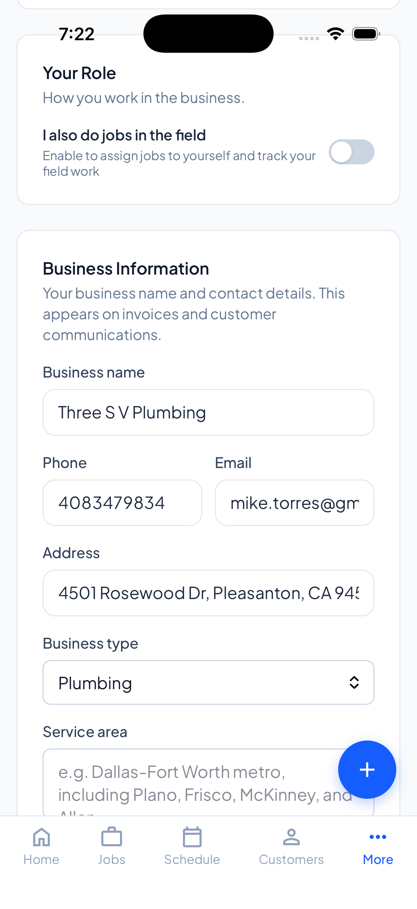
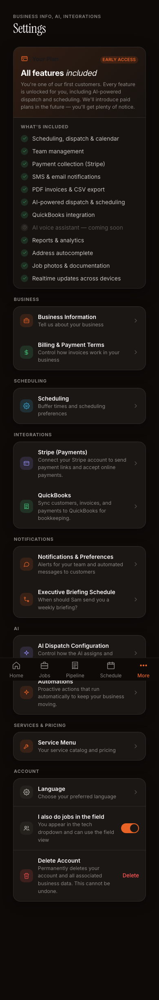
Your business profile and billing settings
- Hourly Rate — your labor rate (e.g., $125/hr). Invoices calculate from this automatically.
- Discount Limit — max discount a tech can give without calling you.
- Dispatch Instructions — tell the AI how you run things, in plain English.
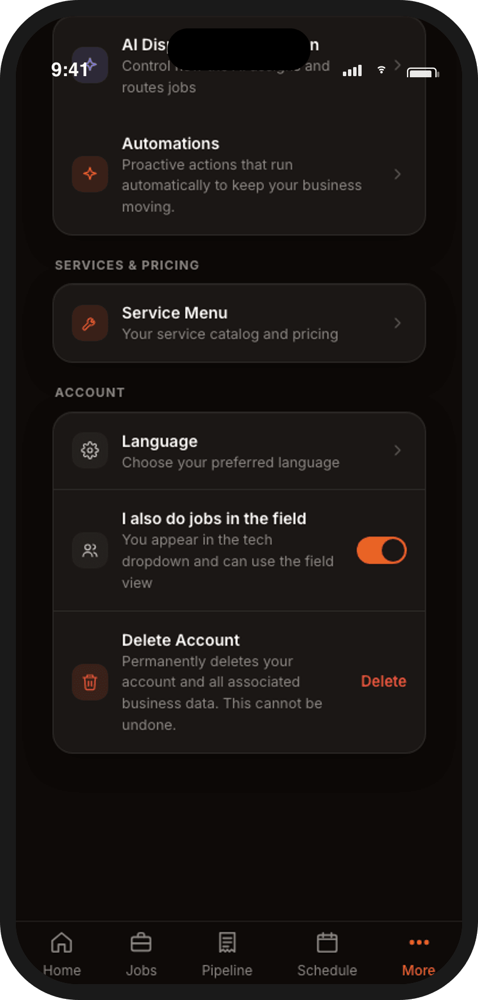
Write your rules once. The AI follows them every time.
Your Daily Routine
Open the app. Know your business. 2 minutes.
Dashboard
Everything you need to know, the moment you open the app.
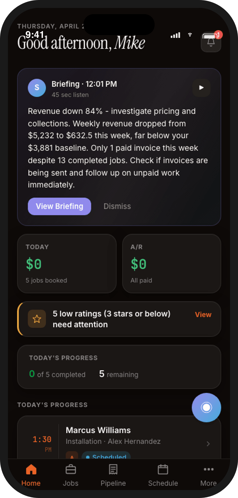
Revenue, jobs, ratings, and alerts at a glance
Four numbers tell you how your business is doing right now. If something needs attention, an alert shows up. No clicking around.
The Four Main Numbers
| Number | What It Means |
|---|---|
| Revenue (YTD) | Money collected since January 1. Only counts invoices customers actually paid. Not sent, not overdue. The small number below compares to this day last year. |
| Outstanding | Money owed to you right now. Every unpaid invoice from every completed job, added up. Turns red if it crosses $500 or anything is overdue. |
| Jobs Today | How many jobs are on the schedule for today, not counting cancelled ones. If any are unassigned, the card flags it. |
| Rating | Your average star rating from your last 200 reviews. The little arrow shows if you're trending up or down (compares last 10 reviews to the 10 before that). |
Alert Cards That Show Up When Needed
These only appear when there's something to look at. A clean dashboard means a clean business.
| Alert | When It Shows |
|---|---|
| Overdue | When unpaid invoices are more than 30 days old. Always red. Tap to see who owes you and how long they've been late. |
| Awaiting Payment | Completed jobs with invoices the customer hasn't paid yet. Shows the customer name, amount, and days outstanding. |
| Pending Estimates | Quotes you've sent but haven't heard back on. Shows draft count, sent count, and total pipeline value. |
| Uninvoiced Completed Jobs | Jobs finished today where nobody created an invoice. These cost you money until you fix them. |
| Expiring Warranties | Jobs where the warranty runs out in the next 30 days. A chance to proactively offer maintenance. |
| Upcoming Recurring Jobs | Jobs from a recurring service plan coming up in the next 7 days. |
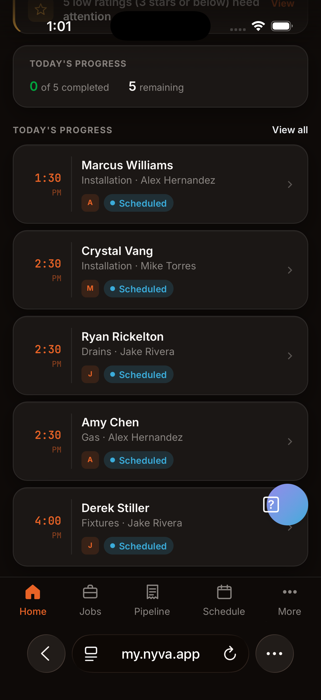
Tomorrow's jobs and Job Mix trends below
Today's Jobs & Tomorrow's Jobs
Scroll below the main numbers to see every job on today's and tomorrow's schedule. Each job card shows:
- Time: when the job is scheduled (e.g., 2:30 PM).
- Job type: "Water Heater Install", "AC Repair", etc.
- Customer & address: who and where.
- Status pill: Scheduled (blue), In Progress (amber), Completed (green), or Overdue (red if past start time and not started).
- Assigned tech: the tech's name, or a red "Unassigned" badge if nobody's on it.
- AI Booked badge: purple badge if the AI phone agent created this job.
- Estimated price: if you set one when creating the job.
Yesterday's Summary & This Week
Collapsible cards at the bottom recap how you closed out yesterday and how the week is shaping up.
| Card | Shows |
|---|---|
| Yesterday's Summary | Jobs completed, revenue collected, new reviews, and average rating. All for yesterday only. |
| This Week | Total jobs scheduled this week (Sun–Sat), jobs completed so far, and revenue collected this week. |
Sam, Your AI Business Advisor
Sam reads your data every week and tells you what matters.
Weekly Briefing

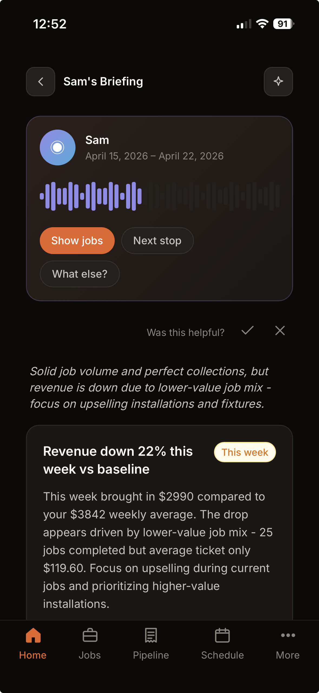
Five business areas, each with status and one-tap actions
Money, Operations, Customers, Reputation, Team. Each section says "needs attention" or "all good." When Sam recommends something, tap Approve and it's done.
Ask Sam Anything
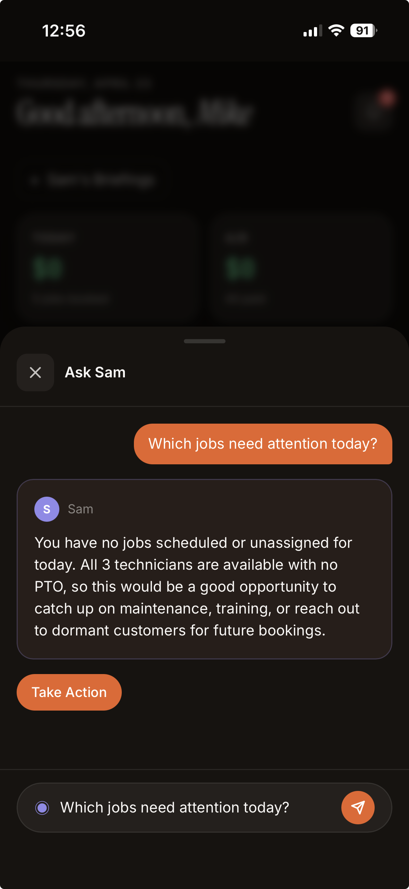
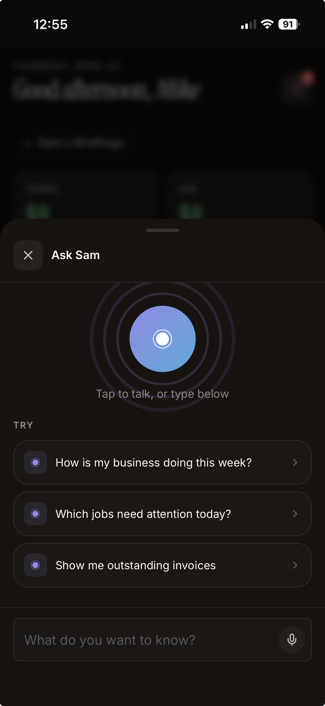
Ask any question in plain English. Sam pulls your real numbers.
- "Who owes me money?"
- "How did we do this week?"
- "Should I hire another tech?"
- "Who's my best tech?"
Schedule & Dispatch
See who's going where. Day, week, or month view.
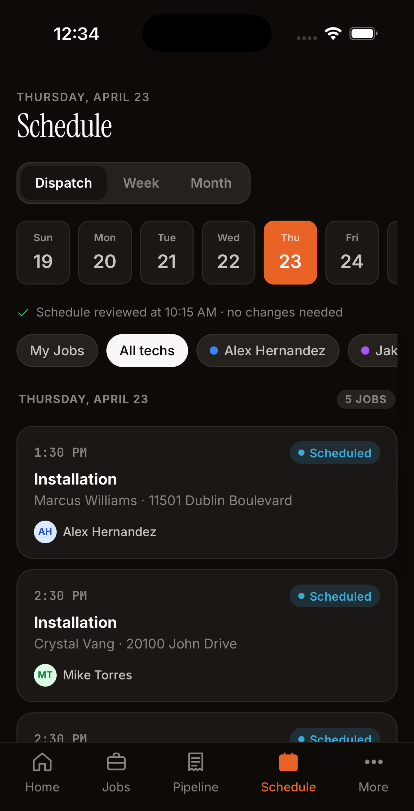
Day view: each tech's jobs in time order
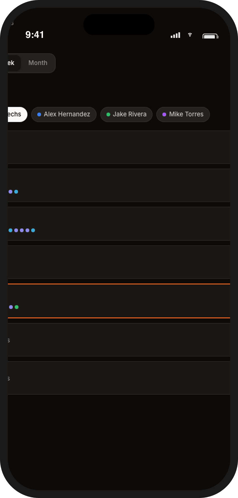
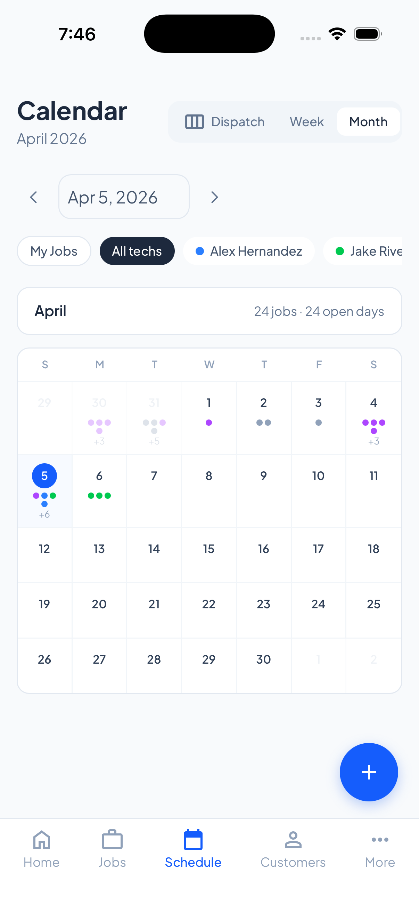
Week view shows workload per tech. Month view shows busy days.
Plan My Day
Tap one button. The AI rearranges your schedule to save drive time.

AI proposals with Confirm/Reject per change, or Approve All
The AI looks at every job, every tech's location, and suggests better assignments. You review each change and confirm. No appointment moves without your say-so.
AI Phone Agent
An AI receptionist answers your business calls, books jobs into Nyva, and sends customers a text confirmation. All without you picking up the phone.
How a Call Works
Customer calls your business number. The AI greets them, asks what they need, collects their name, address, and preferred timing. It checks your live schedule, offers available slots, and books the job once they pick a time.
Before booking, the AI asks: “Is it okay to text you at this number?” If they say yes, they get an SMS confirmation. If they decline, no texts are sent.
Address Verification
After the call, Nyva verifies the address against Google Maps. If the address is approximate or unrecognized, a warning appears in the job notes so you can confirm with the customer before dispatching a tech.
What You See
AI-booked jobs appear with a purple AI Booked badge on your jobs list and dashboard. They work exactly like manual jobs. Edit, reassign, or cancel them as needed.
Managing Work
Jobs, customers, invoices, and getting paid
Jobs
Your operations view: today's schedule, what needs attention, and the full job list.
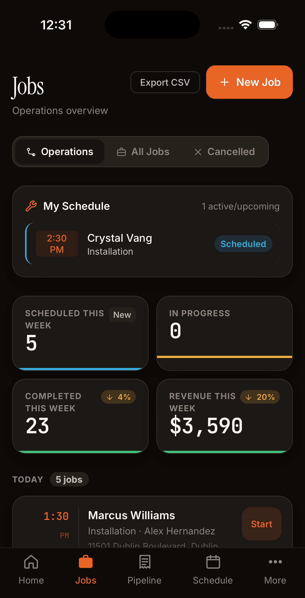
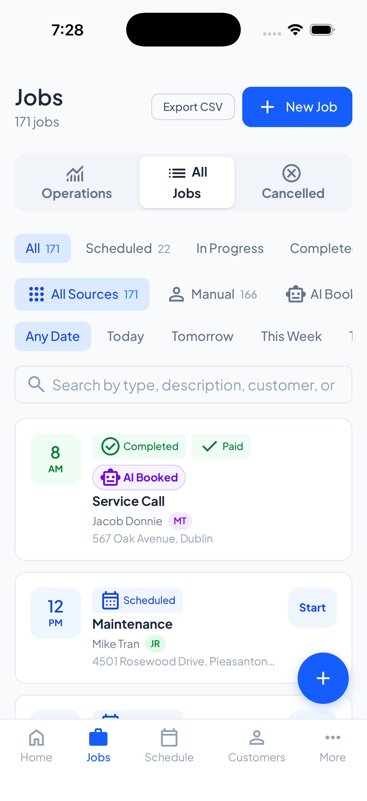
Operations view (left) and All Jobs with filters (right)
Job Status, What Each One Means
Every job moves through these stages. The status pill on each job card tells you exactly where it is.
| Status | What It Means |
|---|---|
| Scheduled | Job is on the calendar, assigned (or waiting to be), but work hasn't started yet. Blue pill. |
| In Progress | Tech has tapped "Start" and is actively working the job. Amber pill. |
| Completed | Tech tapped "Complete". An invoice has been created. Green pill. |
| Overdue | Scheduled start time has passed but the tech hasn't started. Red highlight. Call your tech. |
| Cancelled | Job was called off. Shown grayed out. Doesn't count toward revenue or completion stats. |
| Estimate | Job started life as a quote. Converts to Scheduled once the customer approves the estimate. |
Job Detail
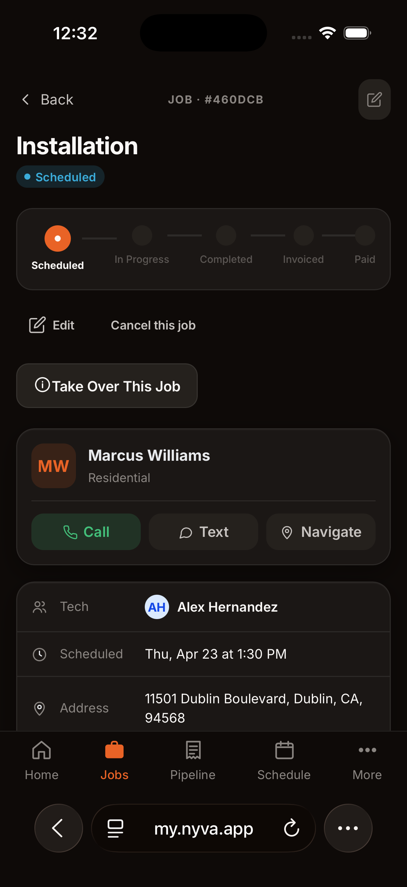
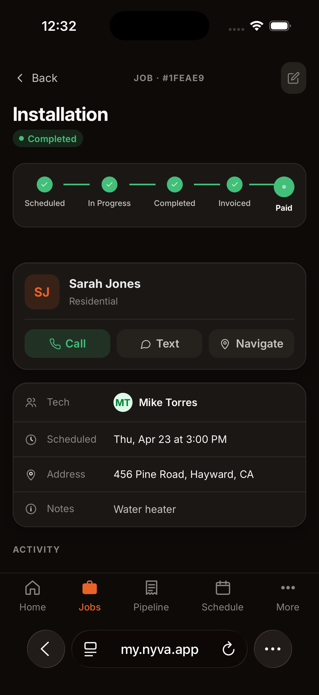
Status tracker shows exactly where the job is. Tap to call customer or navigate.
The job detail page has everything about one job in one place:
- Customer card: tap the phone number to call, tap the address to open it in Maps.
- Status tracker: visual timeline: Scheduled → In Progress → Completed → Invoiced → Paid.
- Job details: type, description, scheduled time, estimated duration, assigned tech.
- Photos: before and after photos the tech took on site.
- Notes: dispatcher notes for the tech, or tech notes about what was done.
- Invoice: once the job is completed, the invoice block appears with line items and payment status.
- Warranty: if you set one (e.g., 12 months parts & labor), the expiration date shows here.
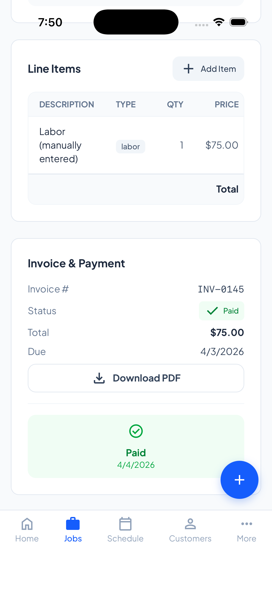
Completed job: line items, invoice number, payment status, Download PDF
Create a Job
Tap + anywhere in the app. Fill in the details. The AI suggests the best tech.
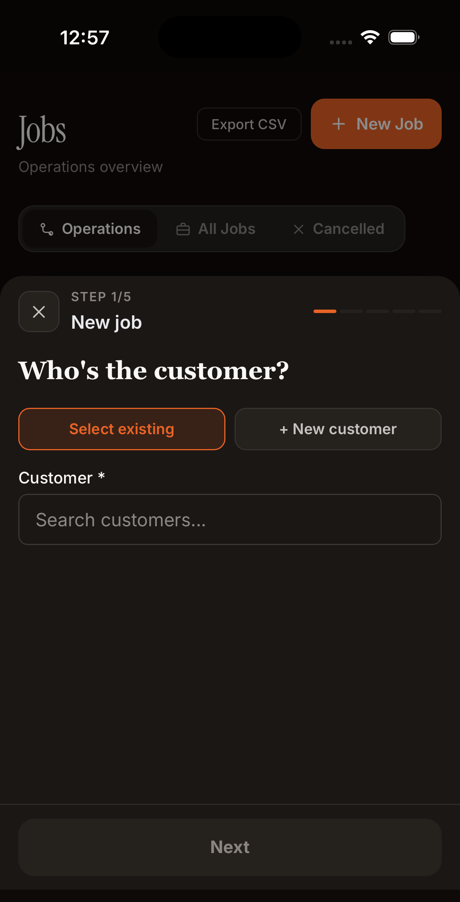
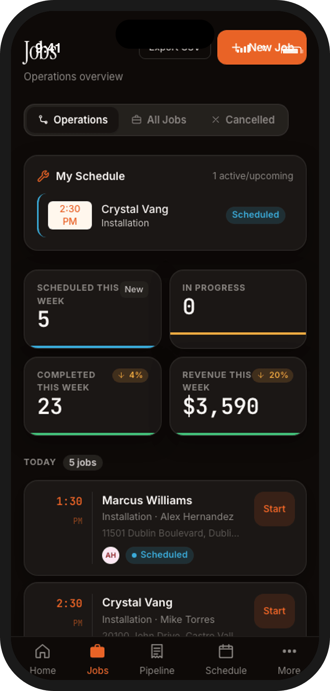
Fill in customer and job type. The AI shows you which tech is closest, available, and best matched.
Every Field on the New Job Form
| Field | What to Put In It |
|---|---|
| Customer * | Pick an existing customer, or tap "+ New Customer" to add one on the spot. The customer's address auto-fills the job address. |
| Job Type * | "Water Heater Install", "AC Repair", "Drain Clog". Plain English. This is what shows up on your calendar cards and reports. |
| Description | Details for the tech: "Customer says water heater is leaking from the bottom. Has shut-off valve." Optional but useful. |
| Address | Auto-fills from the customer. Override if the job is at a different property (common for commercial customers with multiple locations). |
| Unit / Apt | Apartment number, suite, or unit label. Keeps the tech from knocking on the wrong door. |
| Scheduled Date & Time | When the tech should show up. Leave blank to create an unscheduled job you can drag onto the calendar later. |
| Estimated Duration | How long you think it'll take, in minutes. Defaults to your job-type default from Settings. Used to block time on the calendar. |
| Assigned Tech | Pick a tech manually, or leave blank and let the AI suggest. The green "BEST" badge marks the top pick. |
| Estimated Price | Optional. Shows on the job card so you know what each day's schedule is worth before the jobs are done. |
| Deposit | Optional. Fixed amount ($500) or percentage (50%). Required for big installs where you want money up front before buying parts. |
| Warranty | Optional. Duration in months (e.g., 12) + type (Parts, Labor, or Full). Nyva tracks expiration and alerts you 30 days before it runs out. |
| Notes | Internal notes. Not shown to the customer. |
* Required. Everything else is optional but recommended.
Estimates vs Jobs
Need to quote before you commit? Create an Estimate instead. Same form, but it starts in Draft status. You send it to the customer by SMS or email, they tap a link to approve, and the estimate converts into a scheduled job automatically.
| Estimate Status | What It Means |
|---|---|
| Draft | You've created it but haven't sent it yet. Edit freely. |
| Sent | Customer got the link. Waiting on them. |
| Approved | Customer tapped "Approve". Converts to a scheduled job. |
| Declined | Customer said no. Stays on file for your records. |
| Expired | 30 days passed with no response. Auto-expires. Resend or let it go. |
Heads Up (On My Way)
One tap to let the customer know you are heading their way. They get a text with your name, your ETA, and a live tracking link.
How It Works
- Open the job from your tech job list. You will see two buttons at the bottom: "Heads Up" and "Start Job".
- Tap "Heads Up". A picker appears with ETA options: 10, 15, 20, 30, 45, or 60 minutes.
- Pick your ETA. The customer instantly gets an SMS: "ABC Plumbing: Mike is on the way! Expected arrival in about 20 minutes." with a link to a live tracking page.
- The job status changes to En Route. You will see it in the stepper: Scheduled → En Route → In Progress → Completed.
- When you arrive, tap "Start Job" as usual. The clock starts.
What the Customer Sees
The tracking link opens a branded page showing your company name, the technician's name, a live ETA countdown, and a call button. No app download needed. The page updates every 15 seconds.
Good to Know
- Heads Up respects SMS consent and opt-out. If the customer has opted out, no text is sent.
- You can only send one Heads Up per job. The button grays out after sending.
- The owner sees En Route jobs under the "In Progress" tab on the Jobs page.
Complete a Job
Three steps, under 60 seconds. Photos, review the invoice, collect payment.
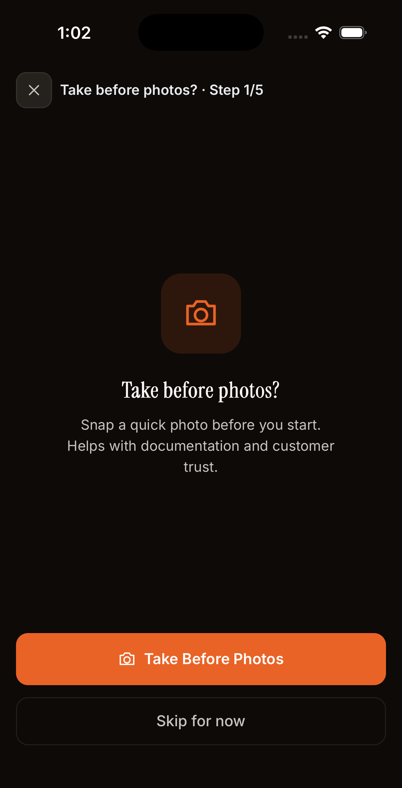
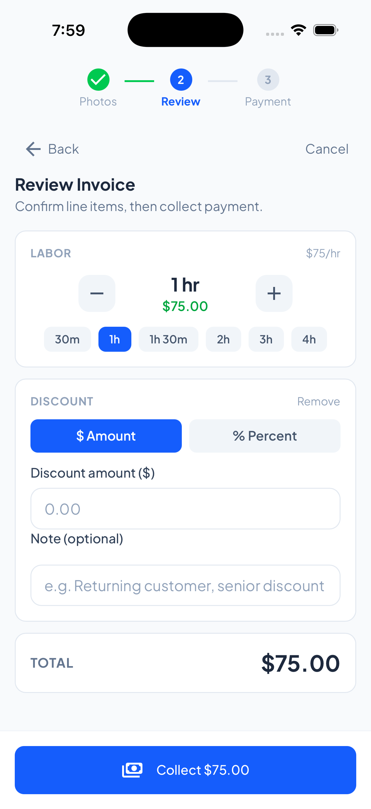
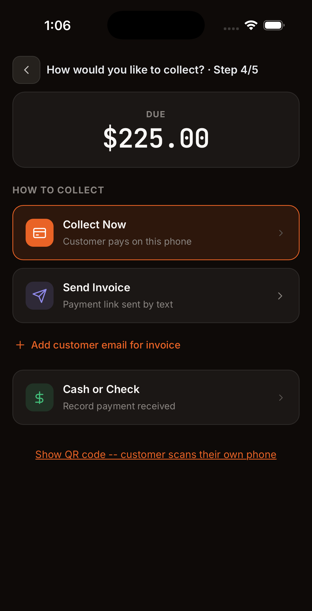
Payment Options
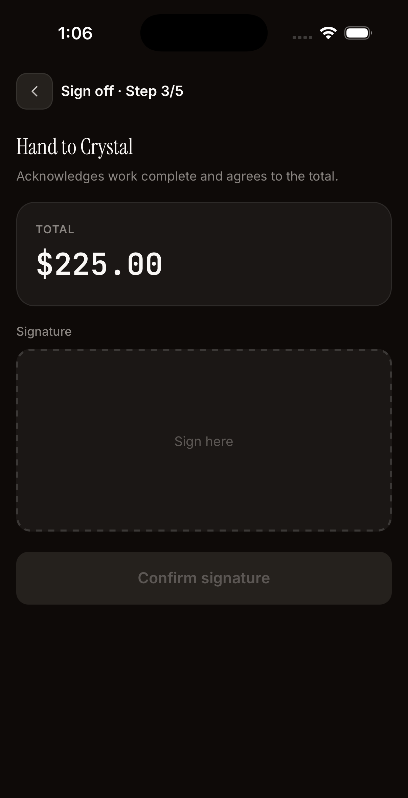
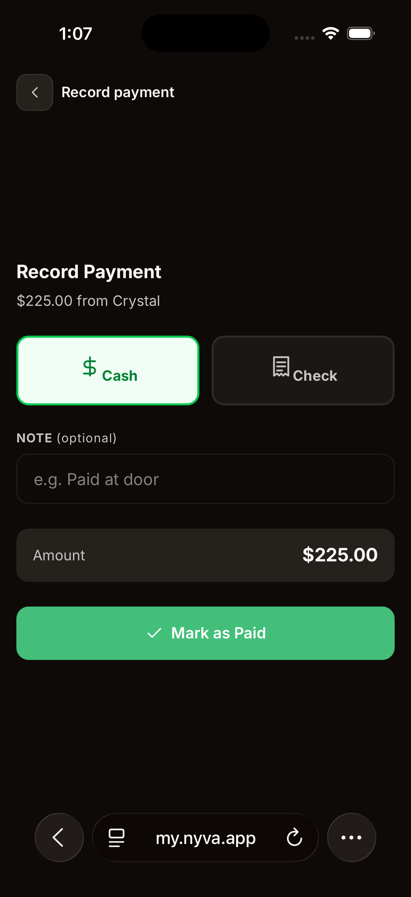
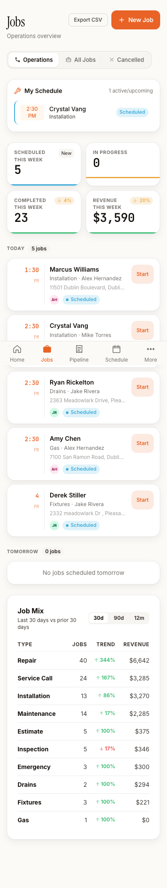
Customers
Your customer list, with search, filters, and full history on every profile.

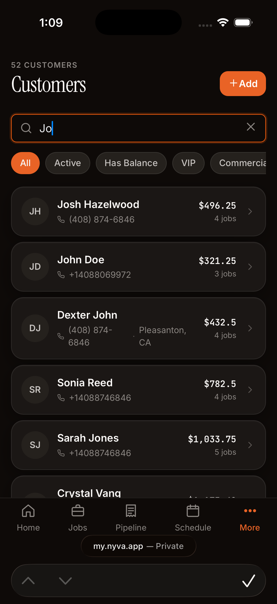
39 customers with filters. Search by name, phone, or address.
Customer Profile
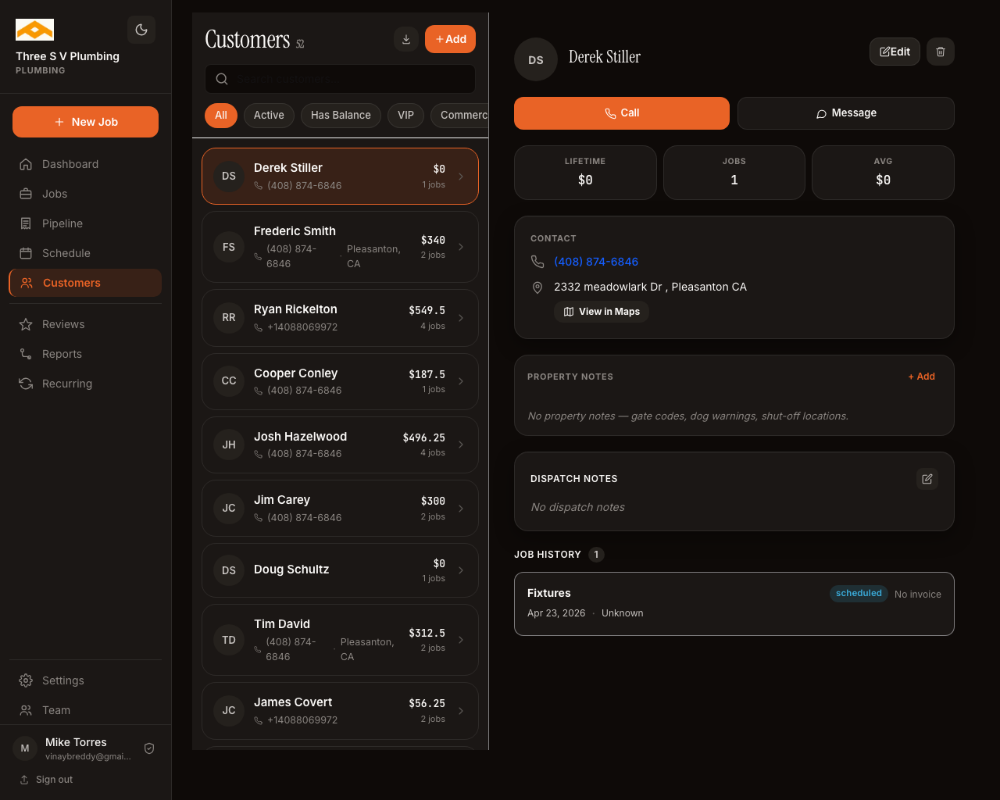
Lifetime value, job history, contact info, dispatch notes. Everything before a job.
Everything you need before dispatching a tech. The profile shows:
- Contact info: name, phone, email, service address. Tap phone to call, tap address for Maps.
- Lifetime value: total paid across all jobs. The number that matters for your top customers.
- Job history: every past job with status, date, amount, and tech. Tap any row for the details.
- Outstanding balance: any unpaid invoices on this customer, so you know before you call.
- Tags: labels you set (VIP, Difficult, Cash Only, etc.) to flag behavior your whole team should know.
- Dispatch notes: "Dog in backyard", "Gate code 1234", "Call before arriving". Shown to every tech on every job for this customer.
- Source: how you found them: Google, referral, repeat. Feeds into Sam's marketing insights.
Add a Customer
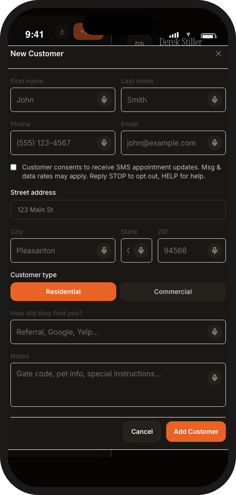
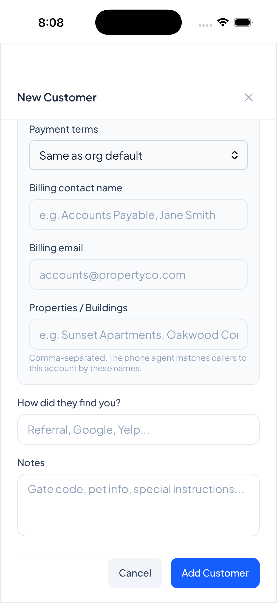
Residential or Commercial. Commercial adds billing contact, payment terms, and properties.
Every Field on the Customer Form
| Field | What to Put In It |
|---|---|
| First / Last Name * | Required. This is how they appear everywhere in the app. |
| Phone | Mobile number in E.164 format (e.g., +15125551234). Used for SMS confirmations, payment links, and review requests. |
| For invoice delivery, estimate links, and receipts. Especially important for commercial accounts. | |
| Address, City, State, ZIP | Primary service address. Used as the default when you create a job for this customer. |
| Customer Type | Residential or Commercial. Changes the fields you see below and the default payment terms. |
| Source | Freeform: "Google", "Yelp", "Referral from Maria", "Repeat". Feeds Sam's marketing reports. |
| Tags | Your own labels: "VIP", "Cash Only", "Commercial", "Monthly Maintenance". |
| SMS Consent | Defaults to checked. Uncheck if the customer specifically told you not to text them. Required for TCPA compliance. |
| Notes | Dispatch notes shown to techs (see above). |
Residential vs Commercial
| Residential | Commercial | |
|---|---|---|
| Payment Terms | Due on receipt | Net 15, 30, 60, or 90 days. Your choice |
| Billing Contact | Same as customer | Separate billing name and email (accounts payable department) |
| Properties | One address | Multiple addresses. One account can own 10 locations |
| Badge | None | "Contract Vendor" badge on the profile |
| Invoice Delivery | SMS payment link is default | Email PDF is default |
Commercial Accounts
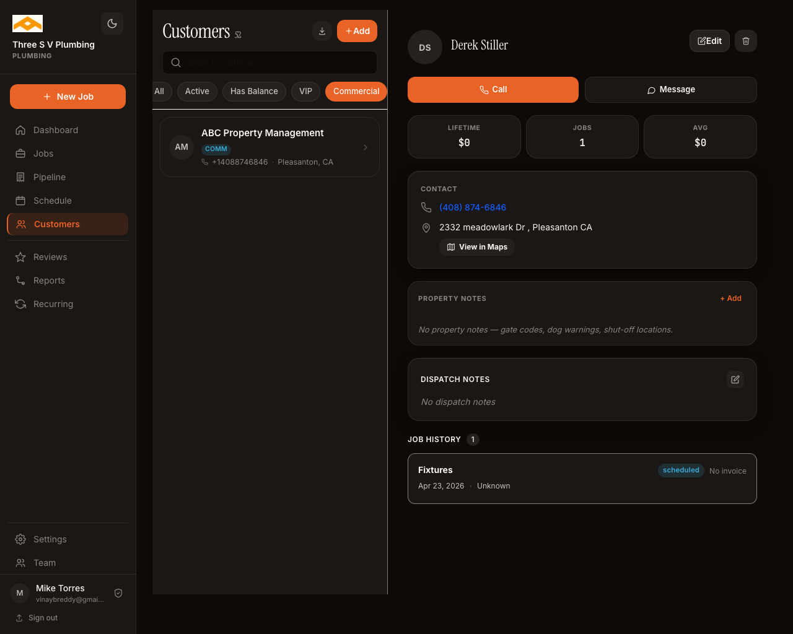
"Contract vendor" badge. Net 30/60/90 terms, separate billing contact.
When you create a job for a commercial customer, Nyva automatically uses their payment terms on the invoice (e.g., "Due Dec 15, 2026" for a Net 30 invoiced Nov 15). Invoices go to the billing email, not the contact email.
Invoicing & Payment
Nyva creates invoices automatically when a job is completed. Time and materials, the industry standard.
Line items, invoice number, status, Download PDF, payment date
What's On Every Invoice
- Invoice number: auto-generated (INV-001, INV-002...). You never type this.
- Customer & address: pulled from the customer profile.
- Labor line: hours × your hourly rate. The tech enters hours worked when completing the job.
- Parts lines: each part added by the tech, with quantity and price.
- Discount: if the tech applied one (limited to your "Max Discount" setting).
- Subtotal: labor + parts − discount.
- Tax: subtotal × your tax rate from Settings.
- Total: what the customer pays.
- Due date: today for residential, or based on the commercial customer's payment terms (e.g., Net 30).
Invoice Status
| Status | What It Means |
|---|---|
| Draft | Created but not sent. You can still edit line items, add parts, or apply discounts. |
| Awaiting Payment | Sent to the customer. Nyva is watching for the payment to come in. |
| Paid | Customer paid. Invoice is locked. Receipt sent automatically. |
Payment Methods
| Method | How It Works | Fee |
|---|---|---|
| Card (QR Code) | Tech shows a QR code on their phone. Customer scans with their phone camera, pays via Stripe. | 2.9% + $0.30 |
| Payment Link (SMS) | Customer gets a text with a short link. Taps it, pays online, gets a receipt. | 2.9% + $0.30 |
| Payment Link (Email) | Same link, delivered by email. Default for commercial accounts with billing departments. | 2.9% + $0.30 |
| Tap to Pay (Terminal) | In-person card reader. Customer taps or inserts their card on your iPad or Android device. | 2.7% + $0.05 |
| Cash | Tech collects cash on site and marks "Paid. Cash". Invoice closes immediately. | None |
| Check | Tech marks "Paid. Check" and records the check number in the payment note. | None |
| Paid External | Customer paid through another system (Venmo, Zelle, wire). Tech marks it paid so your books match reality. | None |
Payments show on your dashboard in real time. When Stripe confirms a card payment, the invoice flips to Paid within seconds.
Deposits for Big Jobs
On a big install (water heater replacement, HVAC swap), you can require a deposit before the job starts. Set it when creating the job:
- Fixed amount: e.g., $500 down.
- Percentage: e.g., 50% of the estimated total.
The customer pays the deposit via the same payment link. The job moves forward only after the deposit clears. The final invoice credits the deposit against the total.
After Payment
When a customer pays, Nyva automatically sends a receipt by text and email. The receipt includes the amount paid and your business name.
Resending Receipts
Customer lost their receipt? Go to the completed job, and you'll see PDF and Send Receipt buttons. You can also send to a different phone number or email. Useful for commercial customers who need receipts sent to their billing department.
Technicians can do this too. Right from their job detail screen.
Your Business
Reviews, team, reports, and settings
Reviews
All customer feedback in one place.
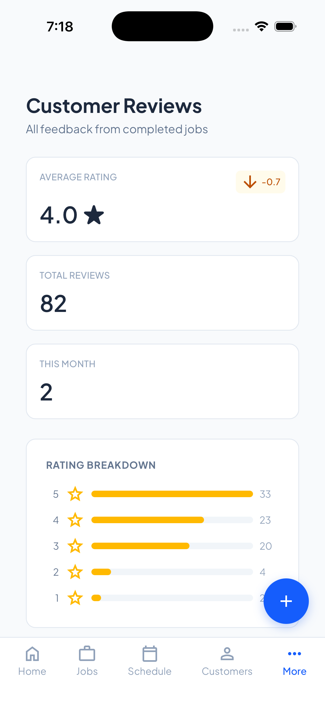
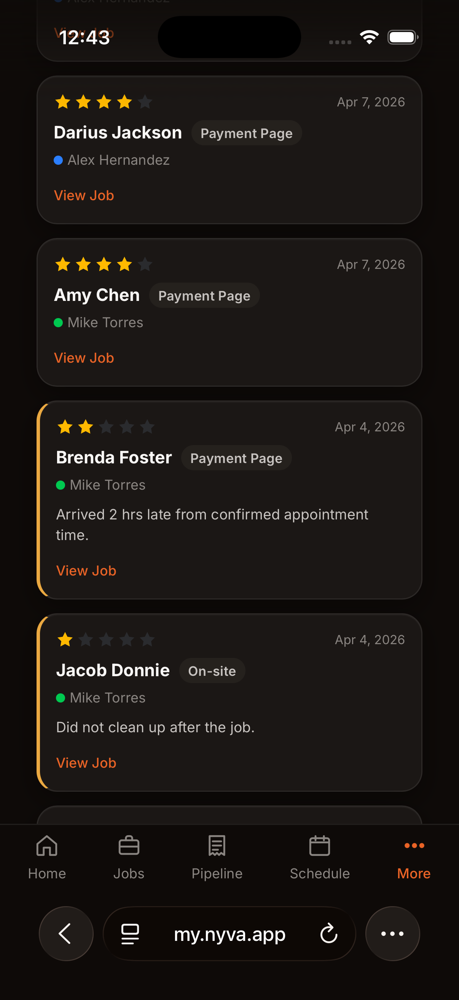
Average rating, star breakdown, and individual reviews sorted newest-first
Low ratings (1-2 stars) stand out so you can follow up. Filter by tech to see who's getting the best reviews.
Team
See how each tech is performing. Add new team members in seconds.
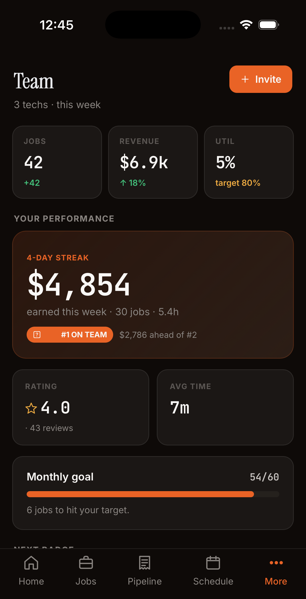
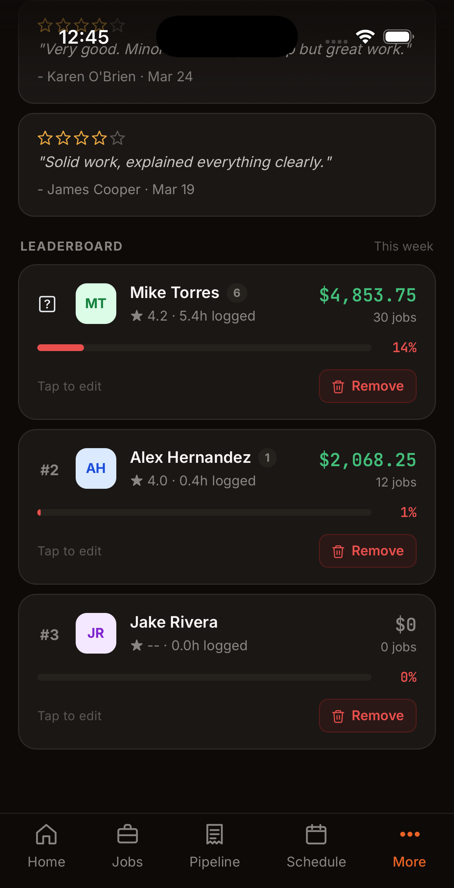
Team list with contact info and rates. Tap the chart icon for performance stats.
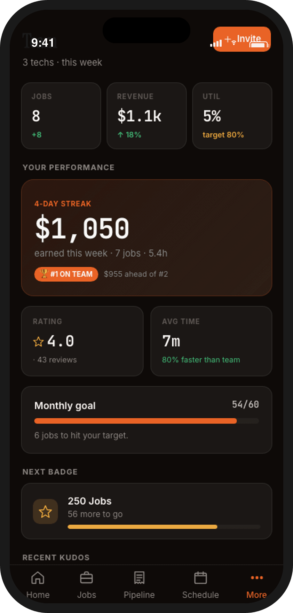
Set role, hourly rate, specialties, and contractor status
| Role | What They See |
|---|---|
| Owner | Everything: all jobs, customers, invoices, financials, settings, Sam, reports |
| Technician | Only their assigned jobs, their calendar, and their own stats |
Adding Team Members
Tap Add Member, enter their name and either an email or phone number. If you add them by phone, they'll get a text message with instructions to log in. No email needed.
Reports
Revenue trends, job volume, and team output over time.
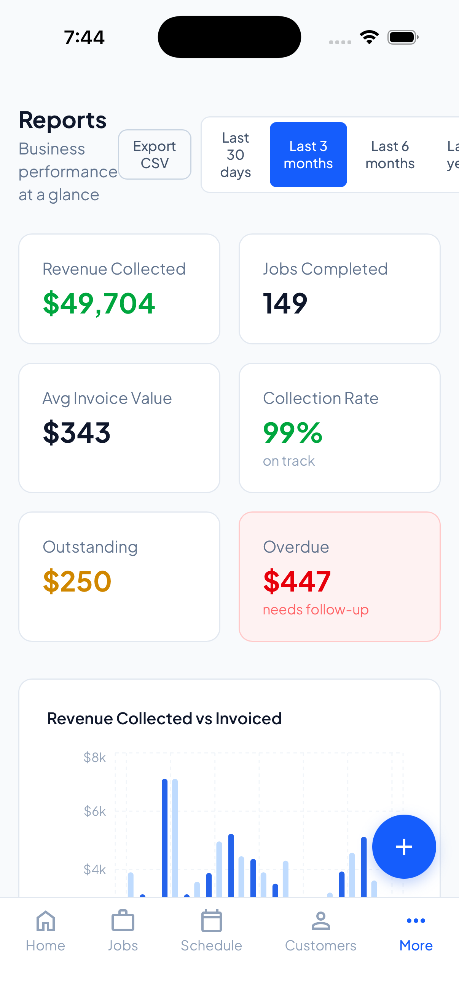
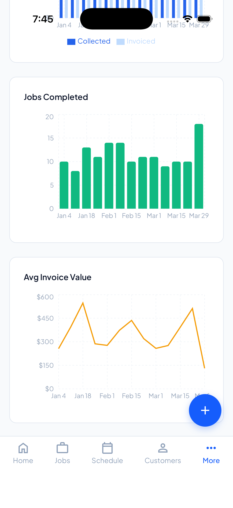
KPIs with date range filter. Charts for revenue, jobs completed, and average invoice value.
Pick a time range: Last 30 days, 3 months, 6 months, or custom. Tap Export CSV to download everything for your accountant.
Automations
Sam runs these for you automatically. Set them up once, they just work.
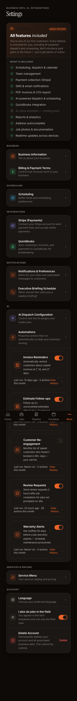
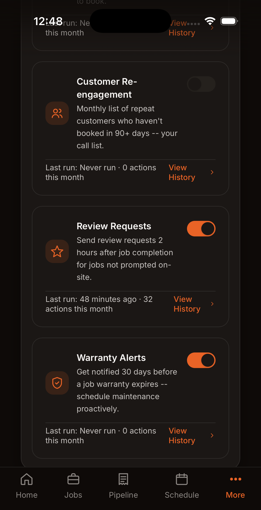
Five automations, each with on/off toggle and run history
| Automation | What It Does |
|---|---|
| Invoice Reminders | Reminds customers about unpaid invoices at 7, 14, and 21 days |
| Estimate Follow-ups | Follows up on quotes not accepted after 5 days |
| Customer Re-engagement | Flags repeat customers who haven't booked in 90+ days |
| Review Requests | Sends review request 2 hours after job completion |
| Warranty Alerts | Notifies 30 days before a job warranty expires |
All SMS automations respect customer consent and quiet hours (no texts before 8am or after 9pm). Even if a toggle is on, no texts are sent to customers who haven't opted in. SMS consent is collected per customer. Either by checking the box when adding them manually, or automatically when the AI phone agent asks during a call.
Push Notifications
Get real-time alerts on your phone — even when the app isn't open. Emergency jobs, schedule changes, and morning optimization results are delivered instantly.
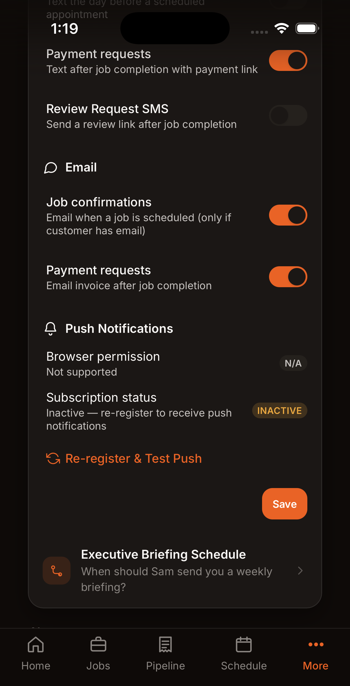
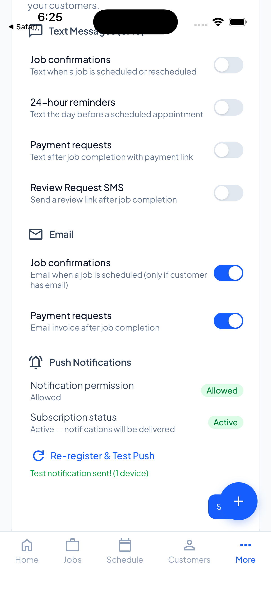
Before and after tapping "Re-register & Test Push"
| Alert | Who Gets It | When It Fires | Opens |
|---|---|---|---|
| Emergency Job Booked | Owner | AI phone agent books a job marked emergency | Job detail |
| Urgent Callback Needed | Owner | Caller wanted ASAP service but no slots were available | Jobs list |
| New Job Assignment | Technician | Owner (or AI) assigns a job to the tech | Tech job detail |
| Job Rescheduled | Technician | Scheduled time, date, or address changes on their job | Tech job detail |
| Schedule Optimized | Owner | Morning Plan My Day runs and auto-applies in 15 min | Calendar |
| Deposit Received | Owner | Customer pays an estimate deposit via Stripe | Estimates (Approved) |
| Job Auto-Assigned | Owner | AI auto-dispatches a job in trusted mode | Jobs list |
How to enable: Go to Settings > Notifications > Push Notifications. If subscription shows "Inactive", tap "Re-register & Test Push". A test notification should appear on your device within seconds.
In-app alerts: When a notification arrives while you're using the app, it appears as a toast at the top of the screen.
Requires iOS app version 1.1 or later.
Settings
Your business profile, payments, integrations, and AI configuration.
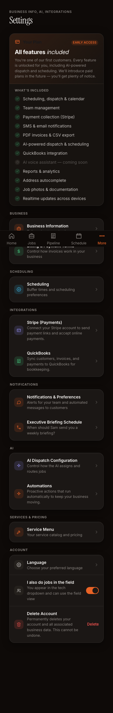
Your plan and included features
Settings Tabs at a Glance
| Tab | What You Control |
|---|---|
| Subscription Plan | Your current tier (Free / Starter / Pro / Enterprise), renewal date, upgrade or downgrade, manage billing portal. |
| Business Info | Organization name, phone, email, address, business type (Plumbing, HVAC, etc.), service areas. |
| Billing Defaults | Hourly rate, default payment terms, max discount a tech can give, tax rate, buffer time between jobs, per-job-type duration defaults. |
| Integrations | Stripe keys (for payments), Stripe Connect (for payouts), Email sender, QuickBooks sync, Google Places (address autocomplete). |
| Notifications | SMS and email preferences per notification type. Push notification re-register button. |
| Service Menu | Your price book. Add services, set prices, organize by category. Load a starter pack for your trade. Techs use it during invoicing. |
| AI & Automations | Dispatch instructions (plain-English rules for the AI), dispatch mode toggles, Sam's briefing schedule, automation toggles. |
| Team & Access | "I also work in the field" toggle (owner-as-tech), team member management shortcut. |
| Account | Your user profile, name, email, log out, delete account. |

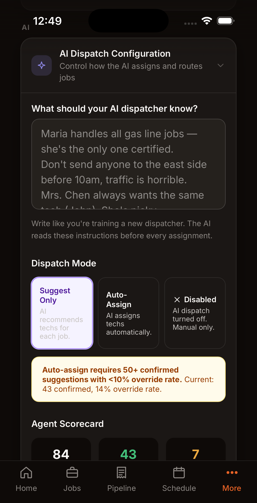
Connect Stripe for payments. Configure Sam's briefing day, time, and sections.
Three Numbers to Get Right Early
- Hourly Rate: your labor rate (e.g., $125/hr). Every invoice calculates labor from this. Change it here and every new invoice uses the new rate.
- Tax Rate: your local sales tax percentage. Applied to every invoice subtotal.
- Max Discount: the most a tech can take off an invoice without calling you first. Keep your margins safe.
Integrations. What Each One Does
| Integration | What Happens If You Don't Set It Up |
|---|---|
| Stripe | Card payments, QR codes, and payment links stop working. You can still take cash, check, and "paid external". |
| Stripe Connect | Money collected via Stripe waits in the platform account instead of being paid out to your bank. Set this up to get paid. |
| Email (Resend) | Transactional emails (estimates, invoices, receipts) don't send. SMS still works. |
| QuickBooks | You'll have to enter customers, invoices, and payments by hand in your accounting. (Pro plan) |
| Twilio (SMS) | Handled by Nyva. No setup needed. SMS costs are included in your plan. |
| AI Phone Agent (Retell) | Your business phone number won't be answered by the AI. Calls still come through to you normally. (Pro plan) |
| Google Places | You'll have to type full addresses by hand instead of selecting from suggestions. (Pro plan) |
QuickBooks integration syncs customers, invoices, and payments automatically. Your bookkeeper sees everything without you doing anything.
Reference
Deep detail on every metric, field, and setting. For when you need to look something up
Dashboard Metrics Reference
Exact definitions for every number on the dashboard. Use this when you're reconciling with your accountant or trying to understand why a number moved.
Main KPIs
| Metric | How It's Calculated |
|---|---|
| Revenue (YTD) | Sum of invoice totals where the invoice is marked Paid AND the payment date is on or after January 1 of the current year. Does not include pending or overdue invoices. Compared to the same period last year. |
| Outstanding | Sum of invoice totals where status is not Paid AND the job is Completed. Open-ended. Includes invoices that went out yesterday as well as ones from months ago. Turns red if above $500 or anything is overdue. |
| Overdue (>30 days) | Sum of invoice totals where status is not Paid AND the invoice was created more than 30 days ago. Always red. Subset of Outstanding. |
| Jobs Today | Count of jobs where the scheduled date is today (in your org's time zone) AND status is not Cancelled. Includes all statuses: Scheduled, In Progress, Completed. |
| Rating (Avg) | Average star rating across your last 200 customer reviews. Trend arrow compares the average of your latest 10 reviews to the 10 before that. Green if 4.5+, amber if 3.5–4.5, red below 3.5. |
Yesterday's Summary
| Metric | How It's Calculated |
|---|---|
| Jobs Completed | Count of jobs where status is Completed AND the scheduled date was yesterday. |
| Revenue Collected | Sum of invoice totals where the payment date was yesterday. |
| Reviews | Count of reviews with a creation date of yesterday. |
| Avg Rating (yesterday) | Average rating of reviews created yesterday. Blank if there were none. |
This Week
| Metric | How It's Calculated |
|---|---|
| Jobs Total | Count of jobs where the scheduled date falls in the current week (Sunday through Saturday). |
| Jobs Completed | Count of jobs where status is Completed AND scheduled date is this week. |
| Revenue This Week | Sum of invoice totals where the payment date is in the current week. |
Alert Cards (only show when applicable)
| Card | When It Appears |
|---|---|
| Awaiting Payment | Any job with status Completed has an unpaid invoice. Shows customer name, invoice amount, due date, and days outstanding. |
| Pending Estimates | Any estimate has status Draft or Sent and is not Declined or Expired. Shows draft count, sent count, and pipeline value (sum of estimate totals). |
| Uninvoiced Completed Jobs | Any job scheduled today has status Completed but no invoice record. Usually means the tech forgot to run the completion flow. |
| Expiring Warranties | Any job has a warranty expiration date within the next 30 days. Prompts proactive maintenance outreach. |
| Upcoming Recurring Jobs | Any job from a recurring series is scheduled in the next 7 days. Early warning so you can staff it. |
Job Fields & Status Reference
Every field you can set on a job, and every status a job can be in.
Job Fields
| Field | Type | Required |
|---|---|---|
| Customer | Pick from customer list | Yes |
| Job Type | Freeform text | Yes |
| Description | Long text | No |
| Address | Street address (auto-fills from customer) | No |
| Unit / Apt | Short text | No |
| Scheduled Date/Time | Date + time | No (unscheduled jobs are allowed) |
| Estimated Duration | Number of minutes | No (defaults from job-type settings) |
| Assigned Tech | Pick from team, or leave blank for AI to assign | No |
| Estimated Price | Dollar amount | No |
| Deposit Type | Fixed ($) or Percentage (%) | No |
| Deposit Amount | Dollar amount or percentage | No |
| Warranty Months | Number of months | No |
| Warranty Type | Parts, Labor, or Full | No |
| Warranty Notes | Freeform text | No |
| Notes | Internal notes for the team (not shown to customer) | No |
| Source | Manual or AI Phone. Auto-set by the system | Auto |
Job Status Lifecycle
| Status | Set By | Goes To |
|---|---|---|
| Unscheduled | Owner (new job with no time set) | Scheduled |
| Scheduled | Owner or AI (when time is set) | In Progress or Cancelled |
| In Progress | Tech (taps Start) | Completed or Cancelled |
| Completed | Tech (taps Complete) | (terminal. Invoice flow opens) |
| Cancelled | Owner | (terminal) |
| Estimate | Owner (creates as estimate) | Scheduled (on customer approval) |
Estimate Lifecycle
| Status | What Happens |
|---|---|
| Draft | You built it but haven't sent it. Edit freely. |
| Sent | Customer got the link. Nyva is watching for approval, decline, or 30 days of silence. |
| Approved | Customer tapped Approve. System converts to a Scheduled job automatically. |
| Declined | Customer tapped Decline, or you marked it declined. Stays on file. |
| Expired | 30 days after Sent with no response. Auto-set by the system. Resend or let it go. |
Line Items
Every invoice line has four parts:
- Description: e.g., "Labor. 3 hrs @ $125/hr" or "Copper piping (10 ft)".
- Quantity: number of hours or units.
- Unit price: dollars per hour or per unit.
- Type: labor, parts, or other (used for reporting).
Customer Fields Reference
| Field | Type | Notes |
|---|---|---|
| First Name * | Text | Required |
| Last Name * | Text | Required |
| Email address | For invoices, estimates, receipts | |
| Phone | Phone in E.164 | For SMS confirmations and payment links |
| Address | Street address | Primary service location |
| City / State / ZIP | Text | |
| Customer Type | Residential or Commercial | Changes payment terms and billing contact behavior |
| Payment Terms (days) | Number | 0 = due on receipt; 30 = Net 30; etc. Used for commercial accounts. |
| Billing Email | Separate from primary email; used by commercial billing departments | |
| Billing Name | Text | Separate name on invoices (e.g., "ACME Inc. Accounts Payable") |
| Properties | List of addresses | Commercial customers with multiple locations |
| Tags | List of short labels | Your own labels: VIP, Cash Only, etc. |
| Source | Freeform | "Google", "Referral", "Repeat". Feeds Sam's marketing insights |
| Notes | Long text | Dispatch notes shown to techs on every job |
| SMS Consent | Checkbox | Defaults unchecked. Required under TCPA before sending any SMS. |
Invoice & Payment Reference
Invoice Fields
| Field | What It Is |
|---|---|
| Invoice Number | Auto-generated sequential ID (INV-001, INV-002...). |
| Subtotal | Sum of all line items before tax. |
| Tax | Subtotal × tax rate from Settings. |
| Total | Subtotal + tax. What the customer pays. |
| Due Date | Today for residential; based on payment_terms_days for commercial. |
| Paid At | Timestamp when marked paid. Powers the "Paid" badge and receipt. |
| Payment Method | How they paid: stripe_card, stripe_terminal, cash, check, paid_external. |
| Payment Reference | Stripe transaction ID or check number. |
| Payment Note | Freeform notes ("partial payment", "paid via company card", etc.). |
Invoice Status
| Status | Meaning |
|---|---|
| Draft | Not sent yet. Edit freely. |
| Awaiting Payment (Sent) | Sent to the customer. Nyva is watching for payment. |
| Paid | Locked. Receipt sent. Appears in revenue reports. |
Payment Methods
See the Invoicing & Payment workflow section above for the detailed payment methods table with fees.
Stripe Concepts
| Term | Meaning |
|---|---|
| Stripe Publishable Key | Safe to share. Used by the app to accept cards. You paste this into Settings. |
| Stripe Secret Key | Never share. Used by the backend to finalize charges. You paste this into Settings. |
| Stripe Connect | OAuth flow that links your Stripe account to Nyva's platform so money flows to your bank automatically. |
| Stripe Terminal | A physical card reader (optional hardware) for tap-to-pay in the field. Lower fees than online payments. |
| Payment Link | A temporary Stripe URL Nyva creates and sends to the customer via SMS or email. Expires if unpaid. |
Team & Roles Reference
Plans & Tech Limits
| Plan | Max Techs | Key Features |
|---|---|---|
| Free | 1 | Calendar, jobs, photos, realtime |
| Starter | 5 | + Stripe, SMS, email, push, PDFs, AI dispatch |
| Pro | Unlimited | + AI phone agent, QuickBooks, reports, Google Places autocomplete |
| Enterprise | Unlimited | + custom branding, API access |
Roles
| Role | What They See |
|---|---|
| Owner | Everything: all jobs, customers, invoices, financials, settings, Sam, reports. |
| Technician | Only jobs assigned to them, their calendar, their own stats. |
Technician Profile Fields
| Field | Meaning |
|---|---|
| Hourly Rate | This tech's labor rate. Can differ from your default; used on invoices when this tech is assigned. |
| Specialties | Labels: "Water Heaters", "Gas Lines", "Commercial HVAC". Used by the AI to match techs to jobs. |
| Contractor | True = 1099, False = employee. Affects payroll reports. |
| Status | Active or Inactive. Inactive techs don't appear in dispatch or stats. |
Tech Performance Stats
- Jobs Completed: this week and all-time.
- Revenue Generated: invoice totals on jobs this tech completed.
- Avg Job Duration: average time from Start to Complete.
- Jobs Per Day: throughput measure.
- Utilization %: billable hours (on jobs) vs. scheduled hours.
- Avg Rating: customer review average for this tech's jobs.
Sam AI Reference
Sam is Nyva's AI layer. It's four things in one: the weekly briefing, an advisor you can ask questions, the dispatch brain, and the phone agent.
Weekly Briefing. What's In It
Sam writes a briefing every week on the day and time you pick. Each section follows the same four-part structure:
- What Happened: the numbers for the week.
- Why: root cause in plain English.
- Options: 2 or 3 things you could do.
- Recommended: the one Sam thinks is best, with reasoning.
| Section | What It Covers |
|---|---|
| CFO (Money) | Revenue collected vs billed, overdue amounts, margin issues, payment collection ideas. |
| COO (Operations) | Schedule fill rate, job completion percentage, capacity issues, utilization trends. |
| Sales (Customers) | New vs repeat customers, dormant customer counts, pipeline from estimates. |
| Marketing (Reputation) | Review velocity, ratings, referral sources, seasonal patterns. |
| People (Team) | Top and bottom tech performers, workload balance, burnout risk. |
You can turn individual sections on or off in Settings. You can also send a test briefing anytime without waiting for the scheduled day.
Ask Sam. What to Ask
Sam routes your question to the right "domain" automatically based on the words you use. Examples:
| Ask About | Example Questions |
|---|---|
| Money (CFO) | "Who owes me money?" · "What's my revenue this month?" · "Why are my margins down?" |
| Operations (COO) | "How booked are we next week?" · "Should I hire another tech?" · "What's my completion rate?" |
| Sales | "Which customers haven't booked in 90 days?" · "What's my repeat rate?" · "Show my pipeline." |
| Marketing | "How are my reviews trending?" · "Where do my customers come from?" · "Am I in a slow season?" |
| People | "Who's my best tech?" · "Who's underperforming?" · "Is anyone overloaded?" |
Sam answers in plain English and often shows "smart buttons" you can tap to run the suggested action. Like sending invoice reminders or pulling up a dormant-customer call list.
Plan My Day. What You See
When you tap "Plan My Day", Sam looks at every unassigned or reassignable job today and proposes a better plan. The results modal shows:
- Proposed assignments per tech: who goes where, and in what order.
- Drive time saved: vs. the current plan.
- Total drive time: across all techs for the day.
- Utilization %: time in jobs vs. driving.
- Per-tech breakdown: jobs count, service areas covered.
You can confirm all proposals at once, or confirm/reject each one individually. If you do nothing, Plan My Day auto-applies after 30 minutes (if you've enabled auto-approve in Settings).
AI Phone Agent. What You See After a Call
- Call transcript: stored on the created job. Turn-by-turn conversation you can read.
- Auto-created job: pre-filled with customer name, description, address, and scheduled time, marked with a purple "AI Booked" badge.
- Fallback notification: if the AI couldn't book (outside service area, no slots, weird request), you get an SMS saying "Call at [time] needs your attention".
Notifications Reference
Every notification Nyva can send, who gets it, and how to turn it on or off.
Job & Payment Notifications
| Type | When | Channel | Recipient |
|---|---|---|---|
| Job Confirmation | Owner schedules a job | SMS, Email, Push | Customer + Tech |
| Job Reminder | Day before the job | SMS, Email, Push | Customer + Tech |
| Payment Request | Invoice created | SMS, Email | Customer |
| Review Request | 2 hours after job completion | SMS, Email | Customer |
| Payment Receipt | Payment cleared | SMS, Email | Customer |
Automations
| Automation | Trigger | Action |
|---|---|---|
| Invoice Reminders | Unpaid invoice hits 7, 14, or 21 days old | Sends SMS reminder to customer |
| Estimate Follow-ups | Estimate sent but untouched for 5 days | Sends SMS follow-up to customer |
| Customer Re-engagement | Repeat customer inactive 90+ days | Adds to owner's "call list" (no SMS) |
| Review Requests | Job completed | Sends review link 2 hours later |
| Warranty Alerts | Warranty within 30 days of expiring | Notifies owner (push + SMS + email) |
Push Notifications
Sent to the iPhone app and web browser. Enable them in Settings > Notifications.
| Alert | Who Gets It | When It Fires | Opens |
|---|---|---|---|
| Emergency Job Booked | Owner | AI phone agent books a job marked emergency | Job detail |
| Urgent Callback Needed | Owner | Caller wanted ASAP service but no slots were available | Jobs list |
| New Job Assignment | Technician | Owner (or AI) assigns a job to the tech | Tech job detail |
| Job Rescheduled | Technician | Scheduled time, date, or address changes on their job | Tech job detail |
| Schedule Optimized | Owner | Morning Plan My Day runs and auto-applies in 15 min | Calendar |
| Deposit Received | Owner | Customer pays an estimate deposit via Stripe | Estimates (Approved) |
| Job Auto-Assigned | Owner | AI auto-dispatches a job in trusted mode | Jobs list |
TCPA & Quiet Hours
All SMS respects these rules automatically:
- No SMS before 8am or after 9pm in the customer's time zone.
- No SMS to customers without recorded consent.
- "STOP" replies unsubscribe the customer from all future SMS.
- "HELP" replies return your business name and a help number.
Settings Index
Every toggle and field in Settings, grouped by tab. Use this to find where something lives.
Business Info
- Organization name, phone, email, address
- Business type (dropdown)
- Service areas (comma-separated)
Billing Defaults
- Hourly rate (default labor rate)
- Tax rate (%)
- Max discount (%)
- Default payment terms (days)
- Buffer time between jobs (minutes)
- Per-job-type defaults: duration, hourly rate
Integrations
- Stripe publishable key + secret key
- Stripe Connect (OAuth connect/disconnect)
- Sender email
- QuickBooks (connect/disconnect)
- AI Phone Agent number
Notifications (Owner Preferences)
- SMS job confirmations (toggle)
- SMS job reminders (toggle)
- SMS payment requests (toggle)
- SMS review requests (toggle)
- Email job confirmations (toggle)
- Email payment requests (toggle)
- Re-register push notifications (button + test)
AI & Automations
- Dispatch instructions (freeform plain-English rules)
- Dispatch mode (enabled / disabled)
- Auto-assign unassigned jobs (toggle)
- Route optimization / Plan My Day (toggle)
- Phone agent suggestions (toggle)
- Briefing day (dropdown)
- Briefing time (HH:MM UTC)
- Briefing sections enabled (CFO, COO, Sales, Marketing, People)
- Send briefing via SMS (toggle)
- Send test briefing (button)
- Per-automation on/off: Invoice Reminders, Estimate Follow-ups, Re-engagement, Review Requests, Warranty Alerts
Team & Access
- "I also work in the field" toggle (creates owner-as-tech profile)
- Add team member (by email or phone)
Account
- User email (display)
- First / last name (edit)
- Log out
- Delete account (requires typing "DELETE" to confirm)
Subscription Plan
- Current tier display
- Current period end date
- Upgrade / downgrade
- Manage billing portal (Stripe customer portal)
- Cancel subscription
Glossary
Plain-English definitions for every term you'll see in Nyva.
| Term | Meaning |
|---|---|
| AI Booked | A job created by the AI phone agent instead of by you. Shown with a purple badge on job cards. |
| Awaiting Payment | An invoice that has been sent to the customer but not paid yet. |
| Buffer Time | Minutes of empty space between jobs on the calendar so techs can travel and eat lunch. |
| Completed (status) | The tech has finished the job and generated an invoice. Not the same as Paid. |
| Contract Vendor | Badge shown on commercial customer profiles with ongoing payment terms. |
| Deposit | Partial payment collected before work begins on big jobs. |
| Dispatch Instructions | Plain-English rules you write for the AI (e.g., "Maria handles all gas line jobs"). |
| Dormant Customer | A repeat customer who hasn't booked in 90+ days. Sam flags these for re-engagement. |
| Estimate | A quote sent to a customer for approval before becoming a job. |
| Fill Rate | Percentage of your tech's scheduled hours that are actually booked with jobs. |
| Hourly Rate | Your labor rate per hour. Used on every invoice to calculate labor charges. |
| Invoice Number | Unique sequential ID auto-generated for each invoice (INV-001, INV-002...). |
| Line Item | A single row on an invoice: labor hours, a part, a discount, or anything else. |
| Net 30 / Net 60 | Commercial payment terms. Customer has 30 or 60 days to pay after invoice date. |
| Optimization | Plan My Day rearranging your schedule to minimize drive time. |
| Org | Your business account in Nyva. One org = one business. Team members all belong to the same org. |
| Outstanding | Total dollars owed to you across all unpaid invoices. |
| Overdue | An invoice that's more than 30 days old and still unpaid. |
| Payment Link | A short URL Nyva generates so customers can pay by tapping a link in a text message. |
| Payment Terms | How many days a customer has to pay after invoice date (0 for residential, 30 for Net 30, etc.). |
| Pending Estimates | Estimates you've sent but haven't gotten a yes/no on yet. |
| Pipeline Value | Total dollars represented by pending estimates. Your potential revenue if everything converts. |
| Prefetch | Nyva loading your data in the background after login so pages open instantly. |
| Recurring Series | A set of jobs created on a repeating schedule (e.g., quarterly HVAC maintenance). |
| Sam | Nyva's AI layer: weekly briefings, Ask Sam advisor, dispatch brain, and phone agent. |
| SMS Consent | Customer's recorded permission to send them text messages. Required by TCPA law. |
| Source | How a customer found your business (Google, referral, repeat). Feeds marketing analytics. |
| Stripe Connect | The link between your Stripe account and Nyva so payments flow to your bank. |
| Stripe Terminal | A physical card reader for tap-to-pay in the field. Lower fees than online. |
| Tag | A short label you attach to a customer (VIP, Cash Only, etc.). |
| Tier | Your subscription plan: Free, Starter, Pro, or Enterprise. Controls which features you can use. |
| Time & Materials (T&M) | Invoicing method where you charge for labor hours plus parts used. The standard for home services. |
| Unassigned | A job with no technician picked yet. Shows a red badge on the card. |
| Utilization % | Portion of a tech's scheduled day they spent actually on billable jobs (vs. driving or idle). |
| Warranty Expiration | Date after which a job's warranty no longer applies. Nyva alerts you 30 days before. |
| YTD | Year-to-date. From January 1 of the current year through today. |
Nyva — Built for businesses that run on trust, show up on time, and get the job done right.